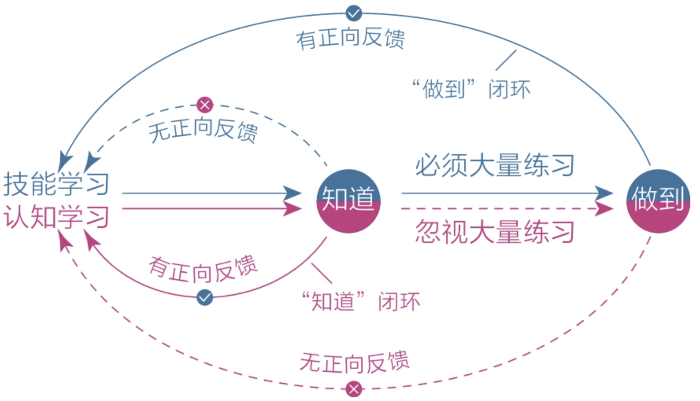

序言
心智：
- 现代社会，我们的寿命变得更长，智商变得更高，财富变得更多，而且这些可以通过基因或基金传递给下一代。但有一样东西却始终无法直接传递——心智。所谓心智，通俗地说，就是我们看待人和事的态度，以及由此做出的判断与选择。
- 心智是从0开始的，追求简单、轻松、舒适、确定是天性，以至于很多人一生被其支配。
醒着的睡着的人：
- 大多数人都会沿着“求学—工作—婚恋”的路线成长，随着生活的惯性一直往前走。年轻的时候认定美好生活自然会到来，随着时间的推移发现自己并没有多么特别，开始随波逐流，不断服从于社会规则和应对生活烦恼，过得去就行，迷迷糊糊，浑浑噩噩。
- 少部分人在合适的年纪就清醒了，跳出了成长陷阱，刻意提升自己，暂时领先了同龄人，却很快遇到瓶颈，想勤奋，却总是敌不过惰性；想努力，却总是陷入低效的状态；想精进，面前却总是弯路不断；读了很多书，都忘了；付出很多努力，都白费了。
觉醒：
- 每天有事情做不代表觉醒，每天都努力也不代表觉醒，真正的觉醒是一种发自内心的渴望，立足长远，保持耐心，运用认知的力量与时间做朋友。
- 认知影响选择，选择改变命运，成长的本质就是让大脑的认知变得更加清晰。
1 大脑
1.1 大脑
本能脑：爬行动物演化出了最初的“本能脑”。本能脑的结构很简单，只有一个原始的反射模块，可以让爬行动物对环境快速做出本能反应，比如遇到危险就战斗或逃跑，遇到猎物就捕食，遇到心仪的异性就追求等。
情绪脑：哺乳动物进化出了情绪脑，有了情绪的加持，哺乳动物就能在恶劣的环境中趋利避害，大大提升了其生存优势，比如恐惧情绪可以让自己远离危险，兴奋情绪可以让自己专注捕猎，愉悦情绪可以增强同伴间的亲密度，伤心情绪能引来同情者的关爱等。
理智脑：人类进化出了理智脑，即前额区域的“新皮层”，它让我们产生语言、创造艺术、发展科技、建立文明，从此在这个星球上占据了绝对的生存优势。
高低之分与权力之争
理智脑是高级的，情绪脑和本能脑是相对低级的，但比起本能脑和情绪脑，它的力量实在是太弱小了。
- 出现年代不同：本能脑和情绪脑的出现年代更久远。
- 发育成熟的时间不同：本能脑在婴儿时期就发育完善，情绪脑等到青春期早期，理智脑要到成年早期。
- 神经元细胞的占有量不同：大脑里大约有860亿个神经元细胞，而本能脑和情绪脑拥有近八成，所以它们对大脑的掌控力更强。
- 运行效率和能耗不同：本能脑和情绪脑虽然看起来很低级，但它们掌管着潜意识和生理系统，时刻掌控我们的视觉、听觉、触觉，调控着呼吸、心跳、血压，其运行速度极快，能耗还低，理智脑不仅运行慢，还十分耗能。
因此，理智脑对大脑的控制能力很弱，所以我们在生活中做的大部分决策往往源于本能和情绪，而非理智。
天性
本能脑和情绪脑的基因一直被生存压力塑造着，所以它们的天性自然成了目光短浅、即时满足。又因它们主导着大脑的决策，所以这些天性也就成了人类的默认天性，在现代社会的表现就是避难趋易和急于求成：
- 避难趋易：只做简单和舒适的事，喜欢在核心区域周边打转，待在舒适区内逃避真正的困难；
- 急于求成：凡事希望立即看到结果，对不能马上看到结果的事往往缺乏耐心，非常容易放弃。
我们做不成事，并不是因为愿望不够强烈，也不是因为意志力不足，而是因为默认天性太过强大：
- 明明知道，但就是做不到；特别想要，但就是得不到。
- 大多数时候我们以为自己在思考，其实都是在对自身的行为和欲望进行合理化。
成长就是克服天性
觉醒和成长就是让理智脑尽快变强，以克服天性：
- 立足长远，主动走出舒适区；
- 为潜在的风险克制自己，为可能的收益延时满足；
- 保持耐心，坚持做那些短期内看不到效果的“无用之事”；
- 抵制诱惑，面对舒适和娱乐时，做出与其他人不同的选择……
大脑和肌肉一样，用进废退。习惯之所以难以改变，就是因为它是自我巩固的——越用越强，越强越用。要想从既有的习惯中跳出来，最好的方法不是依靠自制力，而是依靠知识，因为单纯地依靠自制力是非常痛苦的事，但知识可以让我们轻松产生新的认知和选择。
误区：
- 让理智脑变强大不意味着要抹杀本能脑和情绪脑，也抹杀不了，三位一体，缺一不可，本能脑强大的运算能力和情绪脑强大的行动能力，都是不可多得的宝贵资源，只要去深入了解、循循善诱，就能为己所用。
- 让理智脑变强也不是为了对抗或取代本能脑和情绪脑，因为用力量对抗无异于用一方的短板去挑战另一方的强项，注定是没有出路的。很多人在成长的过程中感到极度痛苦，就是因为他们总是用意志力去对抗本能和情绪，最后把自己搞得精疲力竭，却收效甚微。
1.2 焦虑
想要改变，就不得不面对焦虑:
- 无从下手，尽管我们处在信息时代，但是信息的爆炸也让我们难以判断自己真正需要的资源。
- 沉迷购买学习资源，却没有充分利用，买完书就感觉自己读完了。
- 贪多求快，总觉得觉醒太晚，时间太少，想要短期内完成蜕变。
概括性的形式：
- 完成焦虑：日程安排太满，每天活在Deadline中，想学的东西太多，时间根本不够用。
- 定位焦虑：零基础的阶段却总是以该领域的能人来做对比参照，定位错误。
- 选择焦虑：突然有了自由时间，想做的事情太多，最后把时间浪费在摇摆不定上，根本不知道重要的事是什么。
- 环境焦虑：外界环境的影响是不可避免的，比如家庭、工作，导致想做的事情做不了，不想做的事情却要一直做。
- 难度焦虑：有些书就是难读，有些知识就是难懂，有些技能就是难学，想要掌握精髓就不得不面对核心困难，但却始终在周围打转。
归根结底，焦虑的根源就是：想同时做很多事情，又想立即看到效果；自己的欲望大于能力，又极度缺乏耐心。
人的一切痛苦，本质上都是对自己无能的愤怒。
——王小波
焦虑是天性，是急于求成和避难趋易造成的直接外在表现。
解决办法就是反其道而行之：
- 克制欲望：不要让自己同时做很多事。
- 面对现实：看清自己真实的能力水平。
- 要事优先：想办法只做最重要的事情。
- 接受环境：在局限中做力所能及的事。
- 直面核心：狠狠逼自己一把去突破它。
1.3 耐心
人类天性中最原始、最本能的部分——即时满足。因此缺乏耐心不可耻，和道德品质毫无关系，这就是天性罢了。
复利曲线
首先要认识事物发展的基本规律，复利曲线就是一种理性工具，它显示了价值积累的普遍规律：前期增长非常缓慢，但到达一个拐点后会飞速增长。
选择正确的方向，在积累过程中遵循刻意练习的原则，在舒适区边缘一点一点扩展自己的能力范围，坚信并践行这个价值积累规律，早晚能有所成就。
舒适区边缘
舒适区边缘揭示了能力成长的普遍法则：
无论个体还是群体，其能力都以“舒适区—拉伸区—困难区”的形式分布：
- 要想让自己高效成长，必须让自己始终处于舒适区的边缘；
- 贸然跨到困难区会让自己受挫；
- 而始终停留在舒适区会让自己停滞。
人的天性却与这个规律相反：
- 在欲望上急于求成，总想一口吃成个胖子，导致自己终日在困难区受挫；
- 在行动上避难趋易，总是停留在舒适区，导致自己在现实中总是一无所获。
成长权重对比
成长权重对比揭示了学习、思考、行动和改变的关系：
对于学习而言，学习之后的思考、思考之后的行动、行动之后的改变更重要，如果不盯住内层的改变量，那么在表层投入再多的学习量也会事倍功半。
因此，从权重上看，改变量﹥行动量﹥思考量﹥学习量。但是我们却容易停留在盲目学习的状态，依然是天性在作祟——避难趋易。单纯保持学习输入是简单的，思考、行动、改变是困难的。
解决办法：多即是少，少即是多。比如，读书时不求记住书中的全部知识，只要有一两个观点促使自己发生了切实的改变就足够了，其收获与意义比读很多书但仅停留在知道的层面要大得多。
平台期
学习曲线一般的规律：
学习进展和时间的关系并不是我们想象中的那种线性关系（学多少是多少），而是呈现一种波浪式上升曲线。
几乎任何学习都遵循这个规律，刚开始进步很快，然后变慢，进入平台期，然后发现自己付出大量努力却毫无进步，但这只是假象，因为大脑的神经元细胞依然在连接并不停巩固，到达一个节点后就会迅速进入下一个上升阶段。
怎样拥有耐心
清楚上述规律，不要依靠毅力，依靠长远的目光，遭受长期的冷寂、挫折和失败也能选择坚持，保持终身学习。
- 面对天性，放下心理包袱，坦然接纳自己。
- 温和地与自己对话，培养耐心的过程比较长，不要指望一下子就能很有耐心，如果对自己不能立即变好这件事感到焦虑，这本身就是缺乏耐心的表现。
- 面对诱惑，学会延迟满足，变对抗为沟通。
- 选择娱乐后置，将享乐的快感建立在完成重要任务后的成就感之上，很放松、踏实，就像一种奖赏；而娱乐前置虽然刚开始很快活，但是精力发散和工作拖延，会让人空虚焦虑。
- 面对困难，主动改变视角，赋予行动意义。
- 找到行动的意义和好处，阅读、学习、运动不可能是对抗本能脑和情绪脑去强迫自己行动，而是要明白这些行动真正能给自己带来的好处，化被动为主动。
2 潜意识
2.1 模糊
进化让人类拥有了意识分层，潜意识负责生理系统，意识负责社会系统。意识分层的副作用就是模糊。
因为处理各种信息的速度不对等，意识很难介入潜意识，而潜意识却能轻易左右意识，这就导致了模糊：
- 明明想去学习，结果转身就拿起了手机；
- 明明知道有些担忧毫无意义，却总是忍不住陷入焦虑。
解决办法：
- 学习知识，消除认知模糊：人的认知能力需要从零开始积累，而潜意识却一直存在，因此需要终身学习，因为掌握的工具越多，认知能力越强，消除模糊的能力就越强。培养自己倾向于做高耗能事情的能力，提升思考能力的方法正是不断明确核心困难和心得感悟，并专注于此。
- 拆解烦恼，消除情绪模糊：人们每天都会面临各种烦恼，但多数人习惯被动承受，少有人乐于主动面对。要想不受其困扰，唯一的办法就是正视它、看清它、拆解它、化解它，不给它进入潜意识的机会，不给它变模糊的机会；即使已经进入潜意识，也要想办法将它挖出来，与自己对话，向自己提问，坦然地承认、接纳那些难以启齿的想法，让情绪极度透明。
- 里清外明，消除选择模糊：选择模糊就是一种不确定性，而人类面对不确定性时会不自觉逃避，不自觉地选择那个最清晰、简单和确定的选项，比如享乐。认知清晰，情绪平和，最终还要行动坚定，把目标和过程细化、具体化，在诸多可能性中建立一条单行通道，让自己始终处于“没得选”的状态。
受苦比解决问题来得容易，承受不幸比享受幸福来得简单。
——德国心理治疗师伯特·海灵格
2.2 感性
凭感觉学习
潜意识没有思维，只关心眼前的事物，喜欢即刻、确定、简单、舒适，这是属于天性的部分，同时，它处理信息的速度又极快，至少可达11 000 000次/秒，能极其敏锐地感知很多不易察觉的信息，这是属于感性的部分。
而意识，即我们的理性思考，处理信息的速度只有40次/秒，潜意识是它的275 000倍，二者的能力有着天壤之别。
先用感性能力帮助自己选择，再用理性能力帮助自己思考。
- 在读书时一旦看到有启发的内容，就触发熔断点，立刻停止读书，围绕这个触发点对自己提问。
- 无论在生活中还是在学习上，凡是被某件事击中，“动了感情”，就要有意识地提醒自己追问原因。
凭感觉寻找目标
一个人若是没有人生目标，纵然每天有吃、有喝、有书读、有班上，也会像一个迷失的人一样，内心没有喜悦、生活没有激情，甚至会厌恶自己，因为目标是存放我们热情和精力的地方。
寻找人生目标，要用感知力来代替思考力。《坚毅》一书的作者卡洛琳·亚当斯·米勒提出了3个问题：
- 设想你即将离开世界，回首一生会为什么事情而后悔？
- 想一想你最喜欢的人物是谁？
- 你年轻的时候是怎么度过闲暇时光的？
如何捕捉感性
- 最字法：关注那些最触动自己的点。
- 总字法：平时脑子里总是不自觉地跳出来的某些重复念头，或是心里总是挥之不去的事。
- 无意识的第一反应：关注自己第一次见到某个人、第一次走进某个房间、第一次做某件事时，心中出现的瞬间反应或第一个念头。
- 梦境：梦境是潜意识传递信息的一种方式，它可能是内心真实想法的展示，也可能是灵感的启发。
- 身体：身体不会说话，却是最诚实的。无论生理还是心理上的不适，都会通过身体如实地反映出来，记得多关注这些反馈。
- 直觉：给一些来路不明、无法解释的信息开绿灯。
3 元认知
3.1 元认知
元认知，就是最高级别的认知，它能对自身的“思考过程”进行认知和理解，就是我们习以为常、见怪不怪的反思能力。
元认知能力也是有层级的，元认知至少可分为六个等级，它们最终又可归为两类：
- 被动元认知：普通人通常只会在遇到问题时被迫启用这个能力，比如遭遇指责、批评时，才不得已去反思纠正；处于顺境时，依旧会顺着本性生活，该玩手机玩手机，该睡懒觉睡懒觉，对自身行为的好坏毫无觉察。
- 主动元认知：有些人即使在没有威胁的情况下也会尝试练习扇动翅膀，让自己不断进化，彻底远离危险。
反观，是元认知的起点。
- 运用反观，你能意识到自己在想什么，进而意识到这些想法是否明智，再进一步纠正那些不明智的想法，最终做出更好的选择。
- 缺乏自我观察意识的人只能无意识地顺着感觉和喜好行事，无论在生理上还是在精神上，都会不自觉地追求眼前的舒适和简单，觉察不到自己当前的思维和行为有什么不妥，直到碰壁。
获取元认知的方法：
从过去获取认知工具：包括学习前人的智慧和反思自身的经历。
- 前人的智慧有很多，大多可以从书籍中获取，学习前人的智慧可以让我们拥有更广的全局视角（高度）、掌握更深的底层规律（深度），帮我们从无知中跳出来，做出更加正确的选择。
- 自身的经历更是一种财富，反思复盘让我们有机会思考有什么经验可以获得、有什么教训可以汲取，这样就可以在下次面临类似问题时避免做出像当初那样不够明智的选择。
从现在主动运用元认知：时刻监控自己的思维和行为，站在未来视角思考问题。
- 监控自己的注意力，然后将其集中到自己需要关注的地方，审视自己的行为，保持警醒，创造改变。
- 站在高处俯瞰全局能避免扎进生活的细节迷失自我，未来视角总是当前的行动指南。
提升自己的元认知能力：冥想。
- 只要静坐在某处，然后放松身体，把注意力完全集中到呼吸和感受上的活动。
3.2 自控力
主动控制
自我觉察只是元认知能力的基本盘，在实际生活中，元认知能力还能在自我控制方面提供强大的指导。
元认知能力就是觉察力和自控力的组合。所以从实用角度讲，元认知能力可以被重新定义为：自我审视、主动控制，防止被潜意识左右的能力。
理智脑的战斗力表现：
- 学习、理解、记忆、运算的认知能力。
- 观察、反思、判断、选择的元认知能力。
我们大多数人虽然在学校集中锻炼了认知能力，但对元认知能力的锻炼却很少涉及。这也是很多人活了几十岁依然执行力不强、专注力不够、意志力不足的原因。
必须主动、刻意地锻炼自己的元认知能力，让理智脑更多地参与大脑的决策，掌握大脑的主导权。
- 主导权易主的明显特征：能够主动控制注意力，不会被随机、有趣的娱乐信息随意支配。
- 锻炼小技巧：每当遇到需要选择的情况时，我们要是能先停留几秒思考一下，就有可能激活自己的理智脑，启用元认知来审视当前的思维，然后做出不一样的选择。
教育的意义就是教你在遇到一件事的时候如何看待它。当你对这件事进行反应的时候，总是有你自己的天性在里面，比如说有人骂你，你就想骂回去，但是你在这个反应当中会有一个哪怕是零点几秒的间隔去思考或者审视，这个间隔就是你获得的教育或者经历的意义。
——小马宋《朋友圈的尖子生》
元时间
元时间：一天24小时看起来每分每秒都一样，但实际上并不相同，有些时间的权重要远远大于其他时间，这些权重大的时间叫作“元时间”。
元时间通常分布在“选择的节点”上，比如一件事情、一个阶段或一天开始或结束时。善用这些时间会极大程度地优化后续时间的质量。
怎么做？很简单，就做一件事：想清楚。
- 如果不在这些选择的节点想清楚，我们就会陷入模糊状态，而模糊是潜意识的领地，它会使我们产生本能的反应——娱乐。
- 所以，基本的应对策略是：在选择的节点审视自己的第一反应，并产生清晰明确的主张。
实践：
- 审视第一反应：如果希望成为一个会说话的人，那么遵守一个原则——想两遍再说。
- 产生明确主张：自己行动力弱的时候，脑子里对未来的具体行动肯定是模糊不清的，在这个时候，最好的自救方法就是把所有想做的事情都列出来，进行排序，找出最重要的、唯一的那件事，让自己在某一个时间段里只有一条路可以走。
成为思维舵手
- 针对当下的时间，保持觉知，审视第一反应，产生明确的主张。
- 针对全天的日程，保持清醒，时刻明确下一步要做的事情。
- 针对长远的目标，保持思考，想清楚长远意义和内在动机。
4 专注力
4.1 情绪专注
做A想B：身体做着A，脑子却想着B。使我们在不知不觉中徒生烦恼、渐生愚钝。
行动和感受
任何一件事都可以做注意力分解：
- 集中在行动上的部分
- 集中在感受上的部分
举例：
- 跑步，跑是行动，剩下的是感受
- 吃饭，吃是行动，剩下的是感受
- 睡觉，睡是行动，剩下的是感受
身心合一：起初，行动和感受二者统一，会在做一件事情时全身心地感受这件事情，将注意力全部放在和当前事物相关的事情上。
- 跑就是跑，吃就是吃，睡就是睡。
- 我们刚开始学习某项技能，或还只是孩童的时候通常都是这样的，那时的我们善于投入，敏于接受，平和无忧，灵性十足。
身心分离：随着行动越来越熟练，我们在行动上集中的注意力越来越少，分散在其他地方的注意力越来越多，于是我们不再去耐心感受行动。从此，分心代替专注，身心开始分离。
分心走神
原因：
- 觉得当下太无聊，所以追求更有意思的事情。
- 觉得当下太痛苦，于是追求更舒适的事情。
本质：逃避
- 因为身体受困于现实，只好让思想天马行空。
- 分心走神的成本太低，而人的天性又是急于求成和避难趋易的，所以在默认情况下，我们都会不自觉地待在精神舒适区内。
危害：
- 生命质量变差。走神时，我们要么沉浸过去，要么担忧将来，要么幻想不可能实现的情况，走神可以让我们活在任何时候，唯独不能让我们活在当下。
- 造成拖延和低效，因为情绪总是滞后于行为，所以人们做事时进入状态往往很慢，需要情绪过渡。
回归当下
如果一个人从小就养成了全情投入和界限清晰的专注习惯，那他不仅能获得智力上的聪慧，也能获得情绪上的平和。
实践：让感受回归行动
- 跑步时，把感受收回来，悉心体会抬腿摆臂、呼吸吐纳和迎面的微风；
- 睡觉时，把感受收回来，悉心感受身体的紧张与松弛；
- 吃饭时，把感受收回来，感受每一口饭菜的香甜，体会味觉从有到无的整个过程，不要第一口还没吃完就急着往嘴里塞第二口饭菜。
感受事物消失的过程是一种很好的专注力训练，提示我们身心合一不仅是专注当下，更是享受当下。
一位行者问老和尚：“您得道前在做什么？”
老和尚说：“砍柴、担水、做饭。”
行者问：“那得道后呢？”
老和尚说：“砍柴、担水、做饭。”
行者又问：“那何谓得道？”
老和尚说：“得道前，砍柴时惦记着挑水，挑水时惦记着做饭；得道后，砍柴即砍柴，担水即担水，做饭即做饭。”
4.2 学习专注
进化带给人类极强的感知和思考能力，也给人类带来太多信息的心神不宁，太多欲望的痛苦不堪，太多情绪的担忧焦虑。
沉浸能力区分了不同层次的人，深度沉浸是一项有方法论的技术：
- 定义明确的目标。比如你要练琴，那就告诉自己：“连续三次不犯任何错误、以适当的速度弹奏完曲子。”而不是“我要练琴半小时”这样宽泛的目标。如果目标太大，那就将它分解成小目标，使目标更具体、精细。
- 练习时极度专注。沉浸的关键是要做到“极度”专注，在短时间内投入100%的精力比长时间投入70%的精力好。极度专注也带来灵感，即事前聚精会神，让意识极度投入，事后完全忘记，让意识彻底撒手，从而产生潜意识发散的灵光一现。
- 获得有效的反馈。一定需要反馈来准确识别自己在哪些方面还存在不足，以及为什么会存在不足，避免闭门造车。有教练指导是极好的事，有老师批评也是好的，也可以通过书籍影像、与他人交流或者自我反思来获取。
- 始终在拉伸区练习。一味重复已经掌握的事情是没有意义的，但挑战太难的任务也会让自己感到挫败，要保持做那些让自己感到有些困难但又可以通过努力来完成的事情。
5 学习力
5.1 匹配
深度沉浸其实并非刻意练习的真正核心，其真正核心在于难易匹配上。
也就是舒适区边缘理论，拉伸区练习：
- 既不要太难，也不要太容易。
- 觉得难以坚持，主动降低学习强度和难度。
- 觉得信手拈来，就找更困难但又能做到的事情。
距离我们太远的事物，我们通常无法把握，无论它们是令人痛苦的还是令人享受的。
也就是持续获取与自己当前能力相匹配的财富或自由。
- 自由时间太多时，做选择是一件极为耗能的事情，如果没有与之匹配的清醒和定力，绝大多数人最终都会被强大的天性支配，去选择娱乐消遣。在有约束的环境下我们反而效率更高，生活更充实。
- 拥有巨额财富时，欲望膨胀，迷失自我，很容易挥霍一空。
实践：
- 目标。提炼目标，目标太大太模糊时，拆解目标。
- 关注点。关注点越多、越细致越好，也就是每次行动粒度的小目标。
5.2 深度
学习金字塔：人的学习分为被动学习和主动学习两个层次。
以读书为例：
关键点：
- 从知道到做到是一种巨大的进步，然而自己知道或做到是一回事，让别人知道或做到又是另外一回事
- 如果一件事情你不能讲清楚，十有八九你还没有完全理解。
- 浅层学习满足输入，深度学习注重输出。
如何深度学习：
- 获取高质量知识
- 深度缝接新知识：
- 输出成果去教授：
小技巧：
- 尽可能获取并亲自钻研一手知识。比如，我们可以读经典、读原著，甚至读学术论文。
- 尽可能用自己的话把所学的知识写出来。每读完一本有价值的好书，就用写作的方式把作者的思想用自己的语言重构出来，尽力结合自身经历、学识、立场，去解释、去延伸，而不是简单地把书本的要点进行罗列。
- 反思生活。生活经历同样可以被深度学习，持续反思能让自己对生活细节的感知能力变得越来越强，从生活中获得的东西也越来越多。
同时，不要彻底拒绝浅学习：
- 如知识专栏、精品课、听书等产品，保持开放态度。
- 选择一些值得关注的人，和他们保持联络。
5.3 关联
深度学习的三个层次：
- 知道信息点
- 关联信息点
- 行动和改变
原理：无论是学习动作，还是背记公式，从本质上来说都是大脑中神经细胞建立连接的过程。用神经科学术语解释就是，通过大量的重复动作，大脑中两个或者多个原本并不关联的神经元经过反复刺激产生了强关联。
取舍：知识的获取不在于多少，而在于是否与自己有关联，以及这种关联有多充分，对别人有用的东西可能与自己并没有关系，那就果断将其放弃，把握“与自己有关”的筛选原则，会让关联效能大大提升。
前提：需要明确的目标或强烈的需求。
步骤：
- 足够的热爱和投入。
- 足够的输入。
- 保持好奇心。
5.4 体系
知识：
- 考试得了高分，不叫有知识；茶余饭后能高谈阔论，这也不叫有知识。这些场合下，知识虽然有用，但是这些知识都不太牵扯到具体的得失，所以只是智力游戏。
- 个人成长的目的不是「知道和理解」，而是「判断与选择」，真正的知识不是你知道了它，而是能运用它帮助自己做出正确的判断和选择，解决实际问题。
所以在个人成长领域，没有最优、最确定、最权威的知识体系，只有最适合我们当前状态的认知体系。
误区：
- 把“学习知识”和“学习认知”混淆，用掌握学术知识的方法去对待别人的认知体系，所以不禁沉迷于全面掌握和全盘照搬他人的体系，甚至感觉如果没有完全掌握对方的认知体系，就有可能前功尽弃。
- 非常在意形式上的完整。
- 反例：比如很多读者和我探讨读书方法的时候都会说，自己每读完一本书，都要系统地梳理作者的知识框架，写读书笔记，摘录精华，还要画出思维导图，似乎只有这样做才意味着自己认真读完了一本书，然后他们问我：“你平时用什么思维导图工具？”
- 正例：寻找触动点。我会在触动自己的地方做标记，在空白处写下大量能联想到的思考，书读完之后，我会放上几天，然后问自己：“这本书最触动自己的是哪个点？”这个点可以是一个理论、一个案例，甚至是一句话，只要它真正触动我，并能让我发生真实的改变，我就认为这本书超值了，至于其他，忘记就忘记了，我一点也不觉得可惜。而作者的知识体系和框架，又与我何干呢？
结论：打碎各家的认知体系，只取其中最触动自己的点或块，然后将其拼接成自己的认知网络。
实践：
- 进行每日反思，因为它可以提高自己对生活细节的感知能力，不会让日子像流水一样哗哗流过而什么都没留下。每日反思不是记流水账，而是留意每天最触动自己的那件事，不管是好的启发还是坏的体验，都写下来复盘，写得越细越好。
- 仅仅触动还不够，要产生连接，强化连接。
- 用自己的语言重新解释新知识。
- 需要的时候能够顺利提取知识。
- 在生活中能够经常练习或使用这些知识。
5.5 打卡
打卡的误区：一开始，人们的行动动机全都出于学习成长本身；随着时间的推移，热情消退、动机减弱，学习成长的难度逐渐增大，为了不陷入痛苦，我们的大脑会开启自我保护模式，在举步维艰的时候主动调整认知：学习很难，但打卡不难，完成打卡就成了唯一目的。动机从学习本身转移到了完成任务上，由内在需求转移到了外在形式上。
心理机制：
- 认知闭合需求：指当人们面对一个模糊的问题时，就有给问题找出一个明确的答案的欲望。
- 认知闭合需求扩展到行为上的表现：一件事若迟迟没有完成，心里就总是记挂，期盼着早点结束；此事一旦完成，做这件事的动机就会立即趋向于零。
- 底层原因：大脑喜欢确定性，不喜欢未知和不确定性。
- 打卡心态的特性：学不到，假装一下；学到了，立即停止。
任务心态：会使注意力处于分散状态，很难全身心投入事物本身，从而体会其中的要领和乐趣。现代人很难获得幸福感，多是因为这种快节奏和急心理，但在这种状态下，生活何其枯燥，它无法让我们享受过程，只会让身心紧张、焦虑、麻木和分裂。
- 比如跑步时总想着还剩多少时间就可以结束，读书时总想着还剩多少页就可以完成，背单词时总想着还剩多少个就可以完事……
- 我们感受不到跑步时身心、手脚的畅快，无法深入了解书中人物的思考和情感，体会不到单词之间的深入关联……
身心合一：个体生命的本质意义就在于身心合一，去觉知真实的生命过程，这其中有禅意、有哲思，也有科学。至少在学习时，身心合一、极度专注是极为重要的前提条件，只有在这种状态下，人们才能从学习活动中收到精细、强烈的正向反馈。
实践与改变：
- 用记录改变打卡：每次学习后只做行动记录，不做打卡展示。把学习过程记录下来，既可以看到自己的学习轨迹，也便于每周复盘。
- 设下限，不设上限：为学习任务设定一个能够毫无负担轻松完成的下限，很容易让自己顺着惯性学下去，且带来额外收获的沉浸与满足。
5.6 反馈
是否有及时、持续的正向反馈，是产生学习效果差异的关键。
原理：
- 持续的正向反馈才能真正激发本能脑和情绪脑的强大行动力。
- 因为人类强大的本能脑和情绪脑虽然没有思维、短视愚笨，时常沉溺于游戏、手机、美食、懒觉……但它们超强的欲望和情绪力量却是非常宝贵的行动力资源，如果能让它们感受到学习的乐趣，它们同样会展现强大的行动力，让自己像沉迷娱乐一样沉迷于学习。
- 我们的理智脑虽然聪明、有远见，但它身单力薄，真的不适合亲自上阵，真正需要它做的，是运用聪明才智去制定策略，让本能脑和情绪脑不断接受强烈的正向反馈。
作品意识：重视输出和运用，倾心打磨作品，用产出主动换取反馈。
- 所谓作品，可以是帮自己或他人解决了一个问题，可以是一段表达、一篇文章或者任何的可以对外分享的载体，也可以是一个体系化的大工程。
分享的注意点：
- 分享不是随意分享半成品，而是尽最大力气将作品打磨成自己当前能力范围内可完成的最好的样子。
- 制定分享策略，展示给那些能力不及你的人。
- 冷静客观地对待打击，批评和痛苦也是珍贵的反馈！
被动学习如何获得反馈？
- 自我测试
- 关注错误
古典的跃迁理论：打磨作品 -> 到达一个小山的头部 -> 受到更多关注 -> 移动到一个更大山头的头部 -> 借助系统推力，实现人生跃迁。
不要再默默无闻地独自耕耘了，不产出、不运用、不得到反馈，就算学一辈子也不会获得真正的成长和机遇。
5.7 休息
刻意练习四要素：
- 定义明确的目标
- 极度的专注
- 有效的反馈
- 在拉伸区练习
其中，专注十分重要！而不是一味比拼毅力和耐心。
不过，保持专注需要花费精力，而我们的精力是有限的，那些持续刻苦、争分夺秒、舍不得休息一下的人，他们的精力总量势必呈一条持续下降的曲线。
反观那些轻松的学霸，他们学习时从不过度消耗自己，只要感到精力不足，就停下来主动休息，这反而使他们精力桶的水位得到快速回升。
因此，科学的模式是：极度专注 + 主动休息，如此往复。
要学就学个踏实，要玩就玩个痛快。
——李大钊
精力，也是意志力的代名词。
- 精力充沛时，人们面对困难会无所畏惧，面对诱惑也有更强的抵抗力；
- 但当精力不足时，我们不仅难以面对困难，甚至对诱惑的抵抗能力也会变弱，毕竟克服困难和抵制诱惑都需要消耗意志力。
所以，一个真正的自控高手，不是一个只知道冲刺的人，而是一个善于主动休息、保持平衡的人。
实践：番茄工作法——意大利人弗朗西斯科·西里洛创立于1992年
- 先极其专注地工作25分钟，然后休息5分钟，如此循环往复。
- 25分钟只是一个参考标准，我们可以根据自己的思维耐力来设定工作时段，只要到达了自己的疲劳边缘，就可以主动停下来。
6 行动力
6.1 清晰
珍惜初始阶段
早晨醒来的礼物——纯净的注意力，要善于利用，因为最初的选择会影响行为自动增强的方向。
- 比如，如果我们起床后做的第一件事是看手机信息，注意力就很容易被消息、视频等内容吸引，无限分散；情绪适应了轻松有趣的状态，便会期待获取更多轻松有趣的信息。
- 但反过来，如果起床后我们能刻意避开轻松和娱乐的吸引，先去读书、锻炼，或者做些重要的工作，精力就会呈聚合状态，工作会变得顺利，状态也越来越好，回路自动增强，进入高效和充实的状态。
要事第一！在初始阶段，强迫自己先做重要的事情。
清晰力
为什么大多数人即使有醒过来做重要事情的想法，却还是不可避免第二天鬼使神差睁眼就刷起手机？还是模糊的问题。关于读书、锻炼或者某个重要工作，只有一个大致想法，没有具体想清楚到底做什么怎么做。
清晰力，也就是把目标细化、具体化的能力——行动力只有在清晰力的支撑下才能得到重构。
写下来！
- 待办事项，目标，统统写下来，明确知道自己下一步要做什么。
- 做规划的目的并不是让自己严格地按计划执行，而只是为了让自己心中有数。
- 即使计划有变也没关系，只要有计划的预案，总能回到正轨。
想清楚
从某种程度上说，有自己热爱的事，比行动力本身要重要得多，因为一旦有了热情，你就会自带“要事第一”和“提高清晰力”等各种属性。因此清晰力只是「术」，自己原始的热爱、底层的动力才是「道」。
设定一个目标，制定一份计划，投身一件事情，一定要想清楚自己为何而做，找到原始驱动力。
6.2 傻瓜
先动起来
精明人的习惯思维：
- 凡事必须在看到明确的结果后才行动，如果前景不确定、不明朗，即使别人说得再有道理，我也不愿意投入；
- 如果一个道理或方法不能让自己快速发生变化，就不是最优的，所以要不断寻找，这样才有希望找到最好的方法。
成长中的悖论：想先看到结果再行动的人往往无法看到结果。
因为精明人往往因为各种担忧、权衡、等待，永远停留在了原地，事实上只要方向正确，方法得体，带着不计得失的心态往前走，道路和目标都会越来越清晰。
行动前后，我们看待这个世界的视角是不同的，即认知层次的差异
- 在能主动做成一件事之前，我们眼里的世界是二维的、扁平的。
- 在能主动做成一件事情之后，我们就能够从侧视的角度，看到三维的、立体的世界，注意到人与人在认识水平上的差别。
因此，关于想清楚，事实上不是先想再动，而是边动边想。
又一个悖论：
- 当自己从来没有主动做成过一件事情的时候，总会以为做成一件事很容易，于是生出很多不切实际的欲望和想法，而欲望越多，就越做不成事。
- 反过来，只有当我们真正做成一件事之后，才会知道自己能做的事情其实很少，这样就不会想要那么多了，而欲望一少，焦虑消散，我们反而能更专心地做好手头的事情。
突破阈值
行动后依然看不清结果、体验不到好处、消除不了欲望。
这是正常的，因为改变是有阈值的，付出的努力必须达到某种程度才能影响一个体系，而努力程度低于这个阈值时，你的行动就会收效甚微。
要专注、要持续行动，直到突破阈值，这样才能看到更高层次的风景。
有理有据
傻瓜，不是真傻，这里的傻不是盲目和冲动，而是有原理、有依据的坚定。
- 行动力强，是因为自己赞同行动背后的原理、依据和意义，而不是别人说做这个好，自己不深入了解就跟风去做。
- 如果觉得别人讲的道理有理有据，自己暂时无法反驳，碰巧自己又非常想做这件事，那就相信他们说的是对的，然后笃定地行动。
- 实践途中，要保持思考，用行动反复验证他们的理论，不适则改、适则用，直到自己真正做到为止。
6.3 行动
知行合一，是一件很难的事。
在技能学习的过程中，仅仅知道是无法形成反馈闭环的，只有经过大量练习，让大脑相关的神经元强关联，才能由做到这个节点形成反馈闭环。
在认知学习中，知道一个道理的瞬间确实有提升，也能在短时间做到，但是因为缺乏强关联，这种认知也是不稳定的，还是需要长期大量练习。
不愿意行动的原因1：在开始尝试的时候，总觉得自己做不好，看不到明显的效果，然后就放弃了。
开始尝试的时候，做不好是正常的，因为大脑中的神经元此时关联很弱。很多人认为自己必须有绝对优势或极大的兴趣和天赋才愿意行动，否则就直接放弃，这是偏激的，就像小孩在玩游戏必须要自己能赢才会玩，作为成年人，我们应该学会用更成熟的心态包容自己最初的笨拙，即使做不好，也要持续练习，给神经元留够关联时间。
只要不断练习，神经元之间的关联必然会越来越强，即使你感觉自己暂时在退步，也不要气馁，因为你可能进入了学习的平台期。
不愿意行动的原因2：欲望太多。
道理不可能很快实践，道理也不会轻松实践，我们真正能做的事情其实非常少。但很多人通常不清楚真正做成一件事需要花费多少心力，因为他们很少真正主动做成过一件事。
但是不管是学习一项技能还是培养一个习惯，都是漫长而艰难的过程，不可能一蹴而就，所以一定要打破执念，着眼于现实改变。不发生真正改变的学习都是无效的学习，真正的成长不在于自己懂得了多少道理，而在于自己改变了多少。
7 情绪力
7.1 心智带宽
心智带宽：心智的容量，它支撑着人的认知力、行动力和自控力。心智带宽一旦降低，人很容易丧失判断力，做出不明智的选择，或急于求成，做事缺乏耐心，难以抵挡享乐的诱惑。
稀缺心态：
- 在一定的前提下，贫穷确实会使人变笨，这不是因为贫穷让人能力不足，而是因为贫穷造成的稀缺俘获了人的注意力，进而降低了人的心智带宽，形成稀缺心态。
- 事实上任何能制造压力的事件都会挤占我们的心智带宽，比如明天的演讲、考试的期限、失业的担忧，等等。只要我们的注意力被某一个巨大的事物吸引，我们就有可能进入稀缺状态，进而降低心智带宽，做出不明智的行为。
- 恶性循环：因为稀缺心态而带来短视行为，往往会带来糟糕结果，然后进一步加剧稀缺心态。
急于求成：
- 当一个人同时面临很多任务的时候，他的心智带宽就会降低，反而没有了行动力和自控力。
- 生存压力给人类带来无尽的焦虑，很容易陷入盲目尝试、乱学一通、急于求成的陷阱。
- 缓解了生存压力，却又带来附加的困扰，即自控上的压力。抵制诱惑和欲望无一不消耗我们的心智带宽。
怎么办？
- 保持环境觉知，理智选择。保持对周围环境和变化的敏感，即使身处压力环境也要具备格局和远见。
- 保持目标觉知，少即是多。知道自己想要什么，才能免于盲目和徒劳，把精力集中在最重要的事情上。
- 保持欲望觉知，审视决策。减少脑中的想法和手头的任务，避免同时做很多事，留足够的闲余。
- 保持情绪觉知，谨慎决定。不要在最兴奋、最慌张或最愤怒的时候做决定，也要及时清理日常生活的小情绪。
- 保持闲余觉知，自我设限。不管是金钱还是时间，闲余要适当，但不要过量，富足之后要学会制造稀缺。
7.2 单一视角
在面对各种困境的时候，多角度看问题的能力往往是考验解决问题能力的关键，它不仅能帮助人们获取智慧、成就事业，还能帮助人们在生活中拓展格局、化解烦恼。
世界上任何一个人、任何一件物、任何一件事都是多维立体的，但在现实生活中，我们总是以最方便和最习惯的视角去观察事物，我们观察到的仅仅是无数个角度中的一个。如果不能强烈地意识到这一点，我们就很容易以偏概全地对待这个世界，然后产生各种偏误。
视角单一的人容易固执、急躁和钻牛角尖，而视角多元的人则表现得更为智慧、平和与包容。
相机理论：
- 我们手中的镜头，只要微微偏离一点或拉近、拉远，屏幕上的图像就会发生变化。即看事情的角度是因人而异、千差万别的。
- 但相机本身也有区别，即使在同一角度拍摄同一个物体，最终也会得到两张不同的照片，因为我们各自使用的相机、画幅、镜头、曝光、色彩可能都不一样。即，我们每个人因为生活环境不同、经历不同、学识不同，所以在看待同一个问题时，理解层次和还原程度也不尽相同。
- 因此，与人分歧，要明白仅仅是因为他们的“相机”和自己的不同，其实并非存心与我们作对，甚至他们已经尽了自己最大的努力。
- 如果确定自己的相机比他们的更高级，作品更优秀，那就应该有「向下兼容」的意识——要么对其一笑而过，要么拿出自己的成品，耐心地向他们讲解什么是更好的，而不是一味地指责对方拍出来的东西很糟糕，学会体会和包容。
- 而如果反思发现对方的确实是更好的摄影师，不管是相机还是作品都比自己更为优秀，那就要有「向上升级」的觉悟，去了解、去学习、去模仿、去吸收。
总有一个更好视角，每个人都是生活的摄影师，要善于在生活中锻炼自己的取景和构图的能力，有时候移动一下自己，改变一下范围，切换一下角度，就会对同一件事情产生完全不同的心态。
- 勤移动，尝试用不同的视角看问题。
- 与人相处的时候站在对方的角度想想，不要把自己的感受强加于他人；
- 焦虑、紧张的时候，假设自己是一个局外人用第三视角来观察自己，会发现别人没那么在乎你，担心似乎是多余的；
- 陷入悲伤，无法自拔，那就假设自己处于十年之后，用未来视角反观现在，当下的悲伤毫无意义；
- 善学习，借助知识、高人的视角来观察自己和世界。
- 要开放，保持客观，不臆想臆断。
- 寻帮助，不要钻牛角尖和闭门造车，主动寻求外界帮助。
- 多运动，锻炼能提升多巴胺水平。
- 常反思，用思考和文字排解自己的情绪和复盘自己的烦恼。
7.3 游戏心态
爱德华·德西和理查德·瑞恩的「自我决定理论」：
人类有三种天生的内在需求——关系需求、能力需求和自主需求。
即一个人想要幸福，必须具备以下因素：
有良好的人际关系，得到别人的爱与尊敬；
有独特的本领、技能，为他人带去独特价值；
有自主选择的权力，能做自己想做的事情。
其中，自主需求是自我决定理论的关键与核心，我们如果能主动选择和掌控所做的事情，就会产生内在动力，获取幸福。
但是日常生活中却不得不面对很多不想做又必须做的事情，想要重新获取掌控权，就要改变看待事情的角度：
我并不是在做这件事，我只是在做另外一件事。
- 我并不是在洗衣服，我只是在活动自己的手脚；
- 我并不是去见领导，我只是和一个普通人聊天；
- 我并不是为老板做事，我只是为了提升自己。
事情本身并不重要，我们只是在通过它获取另外一种乐趣，顺便把这件事给做了。
同时，主动培养自主选择和掌控能力：
- 为自己而做：产生内部动机最好的方式是立足于让自己变好。
- 为玩而做：让事情变得好玩，把大事情拆成小事情。
8 早冥读写跑
8.1 早起
日本作家中岛孝志写的《4点起床：最养生和高效的时间管理》。
理论一：每天4点起床，把全天分成三段。
- 4点~12点：第一个8小时用于完成过去的工作（或者说用于完成我们一天正常的工作）；
- 12点~20点：第二个8小时用来铺垫未来的工作（也可以视其为多出来的一个工作日）；
- 20点~次日4点：第三个8小时用于休息（还是8小时没变）。
理论二：关于睡眠的脑科学
- “快速眼动睡眠”(REM)和“非快速眼动睡眠”(Non-REM)
- 健康的成年人睡觉时大多是1.5小时快速眼动睡眠、1.5小时非快速眼动睡眠，两种模式不断切换，并且在最初的两个单位时间内，也就是睡着之后的前3小时中，会进行高质量的睡眠（深度非快速眼动睡眠等于熟睡），之后则是浅层非快速眼动睡眠与快速眼动睡眠的组合。
- 因此人在睡眠后的3小时、4.5小时、6小时、7.5小时这几个节点醒来，就会觉得神清气爽，精力充沛。
理论三：放弃闹钟
- 闹钟不会照顾你的睡眠周期，时间一到，就会把手伸进你的脑子里，让你的脑子发生一场大地震，潜意识会被搅得一团糟。因为你是被闹钟吵醒的，大脑深处其实还睡着，所以明明睡了8小时，可总会觉得没睡饱，整个人昏昏沉沉的。
理论四：抓住大脑工作的高峰期。
- 人体从黎明开始分泌肾上腺素和肾上腺皮质类脂醇这两种可以让人保持精力充沛的荷尔蒙，分泌高峰期正好是早上7点左右，这时，人的工作效率非常高。
- 人体进食后，能量也会在1小时后转变为葡萄糖，输送到大脑，人的记忆力、理解力就会提高，大脑的运转速度会迎来峰值，直至4小时后才降到谷底。
- 要顺应规律，抓住效率高峰期，把最困难的工作放在这个时间段完成，就能达到事半功倍的效果。
- 另外，正常吃早餐的人，上午的工作效率更高。
早起的实践：
- 初期会有一个相对痛苦的适应期，过去就好了。
- 循序渐进逐渐提前起床时间，不可能一步到位。
- 状态优于时间，按自己的精神来判断是否早起。
- 午休。
- 不打扰他人。
- 提前准备好起床后要用的物件和规划要做的事情。
- 明确不早起的特殊情况，给自己一个缓冲。
8.2 冥想
普通人和聪明人最大的能力差异是什么？是长时间保持极度专注的能力。能够迅速进入专注状态，以及能够长期保持专注状态，是高效学习的两个最重要的习惯。
在冥想过程中，我们仅需把注意力全部集中到呼吸上，坚持这种练习，就能养成专注的习惯，将专注变成无意识的行为，在不冥想时也能自动抑制思维离散，控制涣散的精神。
8.3 阅读
人做决定时，分两个层次：
- 情绪决定：比如看到人家健身、摄影、画画时，自己的肾上腺素开始飙升，马上表示自己也想做；
- 理智决定：同样表示想要一样东西，但表示人必定已经想好了为什么要做、怎样去做以及可能遇到的困难等问题。
习惯做“情绪决定”的人，凡事倾向于半途而废，而善于做“理智决定”的人则更容易让想法变成现实。
情绪决定，容易引起假阅读：
- 一想到读书能让人变好，人生的希望似乎就在自己眼前，于是索要书单，疯狂购书囤书，似乎只要占有书籍知识就变成了自己的。
- 或者坚持阅读，读得特别多特别快，但是没有任何改变，脑子甚至更乱了。
明确阅读的本质：
- 想要快速成为一个行业的高手，最好的方法就是和行业专家交流，直接向他们请教，但普通人很难有这样的机会和资源。因此我们需要阅读，书籍是传承思想的最好介质，顶级的思想都能从书籍中找到，只要选书得当，读书就是用最低廉的成本获取最高级的成长策略。
- 书籍可能是一段生命经历、一种奇妙见闻，也可能是一场奇思妙想，时间和空间都不再成为束缚，我们的人生宽度得到了扩展。
- 思考能力是我们立足现代社会的根本竞争力，读书可以帮助我们磨练自己的思考密度，提升自己的思维能力。
阅读的误区：
- 读书要先学会选书。
- 书单可以参考，但不要视其为唯一的选择标准。
- 要选那些阅读难度刚好让自己处在舒适区边缘的书。
- 阅读是为了改变。
- 一本书读完，读书的过程才刚刚开始，阅读之后的思考、思考之后的实践比阅读本身更加重要（非文学性书籍）。
- 阅读量<思考量<行动量<改变量。阅读仅仅是最表层的行为，最终的目的是通过思考和行动改变自己。
- 高阶读书法。
- 特别注意自己在阅读时产生的关联。
- 读写不分家。
8.4 写作
费曼学习法：无论学习什么东西，都要努力琢磨它们究竟在讲什么，它们的实际意义是什么，然后用自己的话将其重新讲出来。
写作就是费曼技巧的体现：
- 用简单的语言：简单不仅仅意味着轻松，还意味着简洁和形象，多用比喻和类比。
- 用自己的语言：只有使用自己的语言去解释所学时，才会真正调动自己原有的知识。
8.5 运动
英国科学家弗朗西斯·高尔顿发明了统计学上的一个重要概念：相关性。
- 如果一个人的智力水平高，那这个人的其他方面往往也不错，比如自律能力、经济水平，包括身体条件都更好。
- 也就是说，好的事物往往是正相关的。
因此，头脑发达，四肢也要发达：
- 运动能够调节人体的各种激素，使人达到最佳状态，使身体这个内部生态系统充满能量和活力。
- 运动能够使大脑长出更多的新的神经元，这意味着运动可以在物理上让人变得更“聪明”。
运动实践：
- 运动 + 学习：安排好运动后的活动和环境刺激，比如做高强度、高难度的脑力活动。
- 有氧运动 + 复杂运动：有氧运动锻炼身体素质，复杂运动锻炼大脑神经。
结语
记录日程：详细记录自己每天的每一个时间段都做了什么事。
- 《奇特的一生》里写柳比歇夫坚持做了56年的时间统计，他过了很好的一生。
- 记录日程能提高自己对时间的敏感度，提升自己时间管理的能力。
- 帮助自己发现日常生活中浪费掉、不合理的时间和事项，进而调整和优化。
每日反思：对当天最触动自己的事情或感悟进行复盘。
- 作用：抓住灵感，提高感知细节的能力，正视痛苦。
- 实践：描述经历，分析原因，改进措施。
- 注意：不被形式束缚，提炼认知点，列行动清单，对自己极度坦诚，多阅读，选择合适的记录载体。